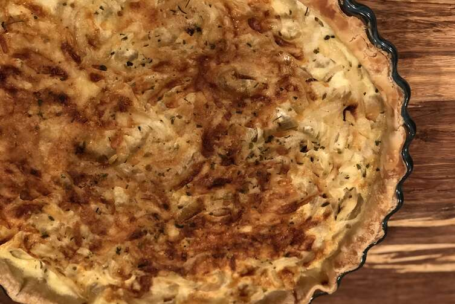

Gluten Free Quiche Lorraine

Description
Make this tasty, gluten free pastry from scratch in this simples and easy gluten free version of the traditional French quiche Lorraine.
Ingredients
2 1/2 cups gluten free all purpose baking flour
1 tablespoon Dijon mustard
1/2 teaspoon ground black pepper
2 cups shredded Gouda cheese
Steps
Combine flour, xantahm gum, and salt in a bowl; mix well
Add butter and mix in using a pastry blender or fork until mixture resembles breadcrumbs
Stir in egg
Stir in water gradually, 1 teaspoon at a time, until moist
Knead dough until it comes together, about 3 minutes
Dust a sheet of parchment paper with gluten free flour
PLace dough on top, then cover with another sheet of parchment paper
Press down lightly to form a disc
Chill in the fridge for 30 minutes
Preheat oven to 180º celsius
Grease a 9-inch pie dish with butter
Invert the pastry onto the dish and press down to evenly cover the bottom
Trim excess pastry
COver with parchment paper; fill with beans or rice
Bake in the preheated oven until lightly golden, about 15 minutes
Remove from oven and let cool for 5 minutes
Brush bottom with Dijon mustard
Cook pancetta in a saucepan over medium heat until crispy, about 3 minutes
Add onions and cook until translucent, about 3 minutes more
Whisk eggs and cream together in a bowl
Season with salt, pepper, and ground nutmeg
Layer half of the pancetta mixture and half of the shredded Gouda cheese
Repeat layer; pour in egg mixture
Bake in preheated oven until golden and set, about 30 minutes
4